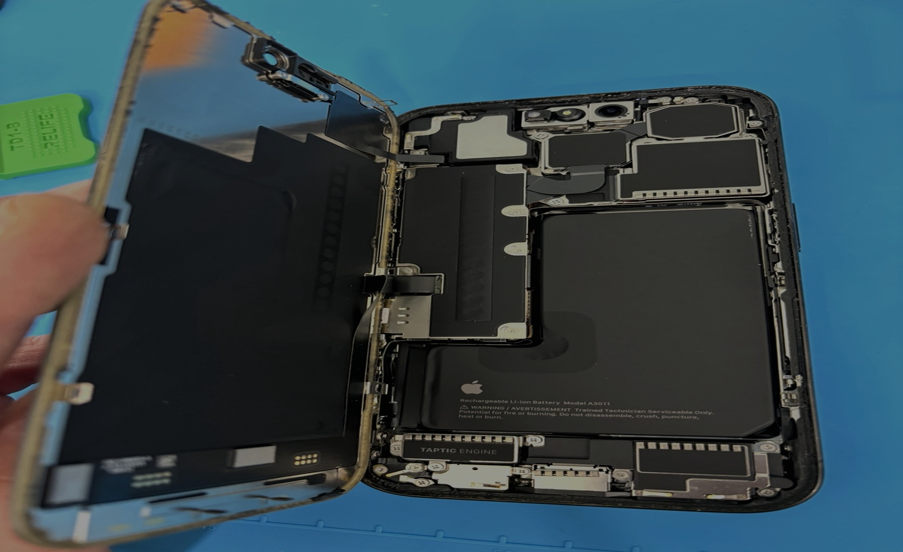
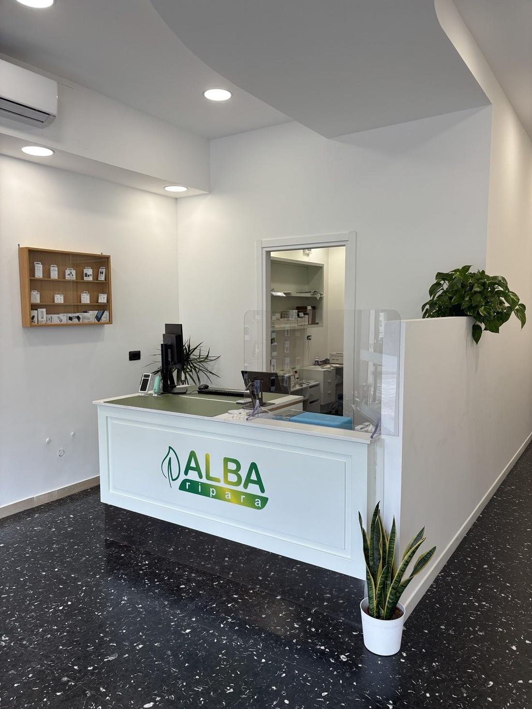
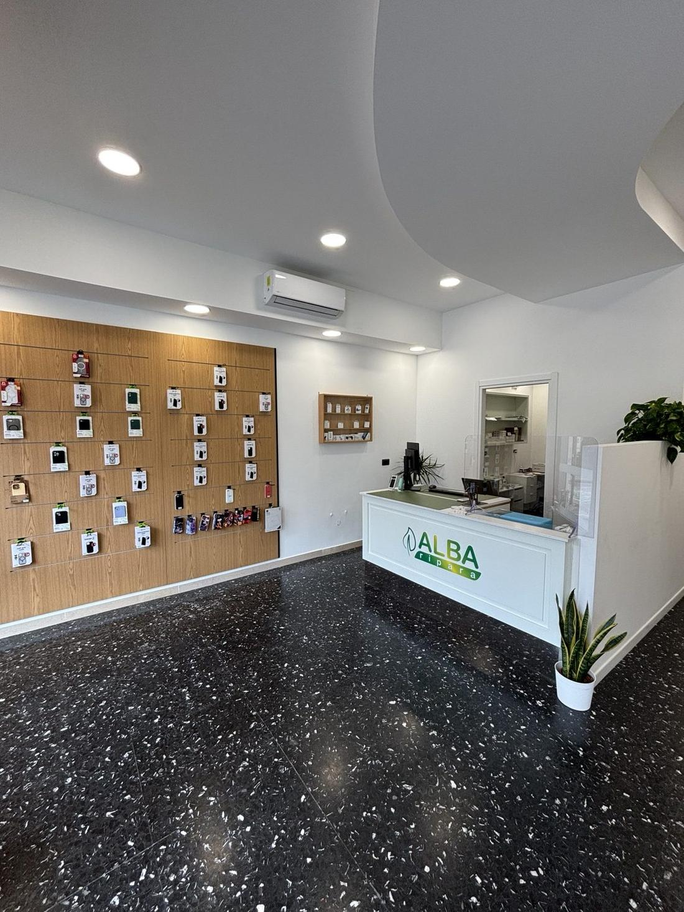

Prezzo prima di procedere
Niente sorprese dopo aver lasciato il telefono.
ALBA RIPARA • ALTOPASCIO
Riparazioni iPhone e smartphone ad Altopascio. Preventivo gratuito, garanzia 3 mesi.
Che cosa si è rotto?

Vetro rotto, righe, macchie o touch che non risponde.
Circa 1 ora con appuntamento
Si scarica in fretta, si spegne da solo o la percentuale salta.
Circa 1 ora con appuntamento
Devi muovere il cavo o non carica proprio. Prima controlliamo il connettore: a volte basta pulirlo.
Verifica al banco
Foto sfocate, macchie, vetrino rotto o fotocamera che vibra.
Ricambio da verificare per il tuo modello
Retro crepato o scheggiato: ti diciamo la soluzione migliore per il tuo modello.
Valutazione in negozio
Telaio piegato o ammaccato dopo una caduta, tasti duri o che non rispondono.
Valutazione in negozio
Schermo nero o si riavvia da solo. Lo verifichiamo e ti diciamo se conviene ripararlo, prima di qualsiasi intervento.
Verifica senza impegno
Preventivo online
Prima scegli il modello, poi il problema. Alla fine vedi solo le soluzioni utili e il pulsante WhatsApp.
Scegli l'iPhone da riparare. Puoi cercarlo o usare le serie rapide.
Scegli prima il modello. Poi compariranno solo gli interventi selezionabili.
METODO ALBA RIPARA
Controlliamo modello, difetto e condizioni del telefono. Prima di procedere ti diciamo costo indicativo, tempi realistici e se la riparazione conviene davvero.
Niente sorprese dopo aver lasciato il telefono.
Componenti originali, pari originali o rigenerati selezionati. La riparazione con componenti scadenti non è contemplata.
Backup, trasferimenti e ripristini fatti con metodo, non “vediamo che succede”.
Portaci il telefono senza impegno. Ti diciamo subito cosa conviene fare, tempi reali e costo indicativo.
Per molti iPhone lavoriamo direttamente in negozio. Con appuntamento, batteria e display richiedono circa 1 ora, salvo altri problemi rilevati al check.
Xiaomi, Oppo, Motorola e altri modelli: ricambi su ordinazione solo se prezzo, qualità e tempi hanno senso.


Negozio reale
Passa in negozio o scrivici prima: con appuntamento controlliamo più velocemente modello, ricambio e tempi. Se un lavoro non conviene, lo diciamo subito.